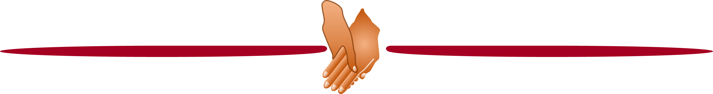

|
TIMELINE OF THE HUMAN CONDITION — Milestones in Evolution and History —
|
| SUMMARY |
|
I. The human condition, in which we occupy one of eight rotating and tilted planets orbiting a star, amongst a galaxy of 100 billion stars revolving around a central black hole in accordance with laws of general relativity, one of 200 billion galaxies in an expanding Universe … neither humans, nor to our knowledge other life forms, exist beyond the confines of planet Earth.
II-1. The human condition, in which we are organic self-replicators, carrying information about ourselves in genes that pass through generations; we live on perhaps the only planet in the Universe to have soils, the bedding for plants that feed us; we are multicellular and sexually reproducing animals, with nervous systems and sleep-wake cycles; without sleep we die; we have bilateral symmetry, acute sensory perception and an endoskeleton; we experience our surroundings subjectively, associating smells with emotional memories, and we yawn contagiously; our hearts may beat to a hearty, heartless or heartfelt rhythm, broken by emotional trauma, repaired by care; tetrapod and terrestrial, we have skin – the body’s largest organ, blinking eyes and tongues that detect sweet, sour, salty, bitter and savoury tastes; we have mammary glands, hair, endothermy, REM sleep and finite lifespan; we may host skin-crawling lice and bedbugs, fleas, ticks, scabies and chiggers, skin-burrowing screwworms and botflies, and endo-parasitic protozoans and worms; we domesticate endogenous retroviruses, to protect ourselves from other viruses; we have opposable thumbs, sociality, capacity for grieving responses and for discriminating between appearance and reality, extended sexual receptivity, speech and sexual dimorphism; we enjoy play, feel empathy, console each other, and self-medicate to improve our fortunes … this body plan and its attributes places us amongst our non-human relatives.
II-2. The human condition, in which we have upright posture and extended childhood, and tool-making industries to satisfy a generalist diet; we improve the nutritive value of food with cooking; our offspring benefit from care given by their parents and by their postmenopausal grandmothers; we are conscious of our own habits, and we economise our food consumption, incentivised by anticipation of future need; we fashion and wear clothing, we practice abstract thought, and we show compassion towards each other … these traits distinguish us from our non-human relatives.
III-3. The human condition, in which we erect edifices to outlast our own lifespans; we collect symbolic ornaments and we bury our dead; we sleep on beds and adorn ourselves with jewellery; we number things; we paint narrative mythologies, and create musical instruments – no human society exists without music; we use footwear for travel, and language for gossip, in thousands of tongues; we sculpt animal and human forms; we process food, and keep companion animals; our communities fight wars amongst themselves, a great source of misery in all our civilisations; we torture others, and we dance to rhythms that elevate the spirit … these behaviours characterise our adventurous sociality.
III-4. The human condition, in which we build monumental temples honouring cosmic events, and walled settlements where we farm domesticated animals and crops for food security; we craft narrative stories that live on through the ages; we may bestow privilege and elite status on a chosen few; we mine metal for tools; we make wine for social lubrication, and take opium for medicinal applications, and we preserve and flavour our food with salt; we sail the seas to trade goods amongst each other; we simulate material wealth in order to promote our social prestige; we submit to the intoxicating allure of tobacco; we pause for introspection, to search our soul and contemplate our condition, and we offset boredom with folk tales and board games; we engineer water delivery systems, plough the soil, and feed the milk of domestic ruminants to our babies; we couple axles to wheels to take the weight from our legs; we keep records for reporting on our activities and securing our legacy; we mobilse our young men to engage in all-out warfare; each one of us has capacities for passion and lust, rapture and glory, loyalty and brutality, leaving conquests and casualties in our wake; we construct governance systems to live off each other’s labour; we devise objective frames of reference for valuing our commodities; we manufacture weapons to enforce our will, and locks to protect our territory and possessions; we count the passing seasons in months and the day in hours; we orient by magnetic compass; we revere our rulers; we respect our marriage vows, if only for the sake of the children, and live by codes of law; we express emotional truth in poetry and we cry tears of sorrow or joy; we burn fossil fuels for energy, cooking and heating; we invent tools for solving numerical problems, and we model our territories in maps; we distinguish sexual intercourse from reproduction, and we artifically enhance our allure with lipstick … these innovations empower us to engineer our environment to our own advantage.
III-5. The human condition, in which our societies embrace civil values, inspiring heroic stories about the tragicomedy of life and death, and loves won and lost; we insure against loss; we drink tea, soothe our children with lullabies, and play with the extraordinary properties of rubber; we make fine art with ceramics, paints and stencils; we enumerate the world around us and reckon with its fractions and geometries; we measure the flow of time; we convey feeling in song; we find moments of happiness in meeting a need, and we give meaning to our lives through engagement with other lives, expressed in empathy, mutual affection and gentleness; we find and teach meaning in the cosmos, and health through sports; we impersonate our betters, and we glorify our proclivities for love and sorrow, evil, retribution, power and destiny, pride, wrath and deceit, jealousy and fulfillment; we master interpretation with parody and drama; we find pathos in poetry, and direction from ethics for our everyday lives; we practice surgery to cure physical illnesses, and policing to solve injustices, and we imbibe psychoactive substances to experience disembodiment; we know that nothing comes from nothing; we may submit to a divine authority, and swear to uphold moral standards; we recognise that wisdom stems from knowing what we don’t know; we believe in our inherent qualities of justice and virtue, and we may fear hell for abusing them; we colour our judgement with many dimensions of emotion, of anger, love, fear, shame, kindness, pity, envy, emulation, and we may feel regret or relief at the path not taken; we laugh contagiously at an absurdity exposed; we can reason logically, yet still fall for mass persuasion; we seek and find numerical constants in all kinds of geometries; we harness natural forces for mechanical work; we invent computational devices to predict future events; we build on concrete foundations, linked by infrastructures of roads, aqueducts and plumbing; we consult encyclopaedias, informed by transcontinental mixing of peoples and exchanging of commodities. As does the spider in outsourcing hearing to its web, so do we craft devices to enhance the reach of our sensory perception. We construct industrial complexes to meet demand for produce; we urbanise our landscapes, to support specialist trades and occupations, to inspire art, design, architecture and scientific innovation; we claim revelational truths; we estimate probabilities of future events; our migrations and explorations encircle the globe, from east to west and from Antarctica to Greenland; we seek objective truth with evidence-based science; we invent incendiary cannons, guns and rockets for blowing each other to smithereens, and we care for the dying; we revere love as a central value, motivator and goal in our relationships, our prosocial behaviours and our cultural imagination; we exchange goods for trusted IOUs of paper money; our mightiest rulers may spawn prodigious numbers of descendants, a product of selection on social prestige; our rulers’ subjects may hold them to account for human rights, yet still they amass personal wealth vastly in excess of need; regardless of privilege, we succumb to diseases, and yield to the temptation of a mug of coffee; we nurture imagination, innovation and enterprise, and we devour books of theology, criticism, history, science, fiction and forbidden texts; we may adhere to religious, racial or national ideologies, by which we justify mass purges and persecution of nonbelievers; we may fear or celebrate the unity of spiritual and bodily life; our collective appetite for personal enrichment and cultural appropriation knows no bounds; whole civilisations surrender to the greed of others; we acclaim humanist art, yet enslave other humans to meet our utopian ideals … these legacies define our empires and conquests.

III-6. The human condition, in which we rebel against our fate to be only one of countless centres of movement in the Universe; we chronicle and treat our mental welfare, finding solace in the confidence of strangers, and harmony in engagement with nature; we delight in observing the laws of nature applying to our stroll on a ship’s deck, as much when underway as when docked; we distinguish reasoned from revelational truth; we measure the passage of time with ever increasing accuracy; in the fall of an apple, we recognise universal forces that govern the cosmos; in our quests for national wealth, we prioritise growth of productivity over curation of infrastructure; in the presence of humility, we may set aside the scales of justice to bestow unconditional forgiveness on a remorseful soul; we render unimaginably distant objects to the scale of light-years; we recklessly drive wild animals to extinction, whilst studiously cataloguing all of Earth’s organisms and our impacts upon them; we mechanise labour; we save more lives with vaccinations than with any other medicinal intervention; we preserve natural refuges from the human pursuit of self-interest … this documented and cumulative understanding enlightens us, empowering us to dominate nature.
III-7. The human condition, in which automate physical labour to achieve economies of scale in the mass production of commodities; we draw knowledge from experience, and morality from reason; we attach ourselves to lighter-than-air machines to float above the ground; we found nation states; we battle for gender equality; we appreciate that population growth capacity always outpaces improvements in resources: the struggle for existence facing all organisms and a pressing challenge to our own wellbeing; we understand the mutual dependence of physical, climatological and organic phenomena, including our bondage to the greenhouse effect of Earth’s atmosphere, even as we strive to detach ourselves from all such interdependences with machines that outperform the strongest animals; we create music that transcends our all-conquering ambitions; we arrest the passage of light to preserve a moment in history; we understand that coldness has a fundamental limit, that the Universe warms over time, that organisms evolve through natural selection acting on heritable genes (a law unique to biological systems), and that infinity comes in different sizes; we take sensual pleasure in impressions of light and movement, transmit feeling with colour and form, sculpt our inner struggles, seize decisive moments, and capture formative experience; we mass-produce telephones for conversation between distant voices, recordings to satisfy our nostalgia, motorised vehicles for effortless mobility; we centralise sources of power and treatment of sewerage, to light and flush our cities safely and efficiently; we send information on a beam of light, knowing that nothing in the Universe travels faster; our emotions guide and motivate our behaviour, setting limits to our rationality; we take flight in heavier-than-air machines to command the skies; we predict and observe how acceleration and gravity distort space and time; we synthesise organic polymers to manufacture plastics, with uses in every facet of our lives; we set aside ethical concerns to integrate human brain organoids into the brains of living rodents, and we train in vitro human neurons to master speech recognition; we synthesise ammonia to fertilise the plants that feed us, fuelling an explosive growth of our global population; we may own our feelings, or owe them to divinities, with inner commitment as our life’s purpose; we devise efficient production lines that require dehumanising labour to mass-produce affordable machines for labourers; our many societies, each with customs and tolerances adapted to particular ecologies and histories, may rise up against each other in a global war to end all wars, amongst coalitions that kill, maim, displace and impoverish millions, that eventually triumph or capitulate, settling for peace until reconfiguring for another cataclysmic regional or global war, tyranny or genocide; when we are not committing or suffering acts of terror or desperation, we may choose to interpret commodities as art, for example transforming a urinal into a fountain by the force of our imagination; when our societies are weakened or distracted by other concerns, we may succumb to pandemics that disable and kill millions; at home, we listen in to devices that air public voices and music, to inform, educate and entertain us, that recount stories to captivate the willing listener, and we gaze in awe at a small screen that broadcasts moving pictures from other times or places, bringing rich, powerful and famous people into our own living rooms; we agree in principle that slavery is an abhorrent practice, yet often turn a blind eye to it; we accept that the Universe is not precisely determinable, and we know for a fact that our reality is always incomplete, as if our adventures of the mind all start from the soul and never return to it; we can split atoms to make nuclear chain reactions, giving us atomic weapons, which we use or threaten to use for mass destruction of our enemies, and nuclear energy with which to power our cities; we understand the value of nature’s contributions to people, in the provisioning, regulating, cultural and supporting services of its ecosystems; we assemble computers to analyse and solve impenetrable numerical problems, and to automate tedious jobs … so much knowledge, invention and industry revolutionises our dominion over nature.
III-8. The human condition, in which we declare that all human beings are born free and equal in dignity and rights; we send satellites into Earth orbit, to monitor our planet and each other, and to network our communications systems and infrastructure with cross-continental interdependencies; we preserve the continent of Antarctica solely for peaceful purposes and scientific investigation; we hike to the top of Earth’s highest mountain, and dive to the bottom of its deepest trench; we take control over our own fertility; we strap ourselves into rockets to visit outer space; we address discord within a standardised framework of diplomacy, aspiring to convert confrontation to consensus; we commit in principle to the elimination of all forms of racial discrimination, even as ruling parties persecute or marginalise ethnic minorities; we agree to the prohibition of weapons of mass destruction in Earth orbit, and to their non-proliferation on Earth, even whilst our armies design nuclear missiles capable of looping through space on their way to obliterating an enemy nation, precipitating global starvation; we send out probes to neighbouring planets, to learn about their compositions; we know the vital contribution of natural capital to our human, social, manufactured and financial capitals, and its vulnerability to exploitation, and yet we drive it down with our ceaseless questing after affluence; we understand how elementary particles determine the composition of all matter and all its governing forces other than gravitation; we recognise nature’s intrinsic value, and the imperative of keeping human activities within Earth’s limits; we engineer genes to improve food plants and to research animal diseases; when our industrial production of hydrochlorofluorocarbons dissolves the stratospheric ozone layer, causing DNA damage to Earth’s primary producers, we succeed in uniting every nation on Earth to agree a ban on these and other ozone-depleting substances; we understand the need for sustainable development that embeds economies in nature; regardless, we continue to burn fossil fuels even as they begin to heat the planet, destabilising climate; we link together computers in a world-wide web of information exchange; we search the Universe to find other planets like ours, which we imagine might also support life; we commit to the conservation of Earth’s biodiversity, and the sustainable use and equitable sharing of its benefits, even as we continue to plunder it inequitably; amongst ageing populations with rising levels of chronic and protracted illnesses, we may give a terminally ill patient the right to determine the time of their own death; we deplete the oceans’ global stock of fish, jeopardising our own future food security; we ignore at our peril the vital ecosystem services provided by our wildlife; we clone mammals, and agonise about the potential temptations and dangers of cloning ourselves; we go ahead and do it anyway; we develop clean-energy alternatives to the fossil fuels that have already emitted enough greenhouse gases to trigger globally rising sea levels, destined to displace hundreds of millions; after monetising hard-won knowledge, we collate it as a common good for access by everyone. We exceed planetary boundaries with reckless abandon, prompting nations that grew rich on fossil fuels to promise aid for poorer nations adapting to climate change, amounting to finance worth a paltry fraction of annual profit to the oil and gas industries. We are convinced that humanity can and should live in harmony with nature, without reckoning that this means embedding economies in nature; we synthesise artificial genes, and mould biological materials into self-replicating xenobots, with potential for great benefit or uncontrollable harm to our wellbeing; we measure time to an accuracy of 1 second in 15 billion years, enough to distinguish its faster ticking with each centimetre of altitude; we detect gravitational waves rippling out through space-time from colliding and merging black holes in distant galaxies; we count the number of trees on Earth (3 trillion) and monitor their decline, in our demand for wood and land, and in wildfires exacerbated by global warming … with this explosion in technological sophistication we hasten to meet the needs of the present, eagerly exceeding them where we can, fully comprehending how much we compromise the ability of future generations to meet their own needs.
IV-9. The human condition, in which we agree to end poverty and other deprivations by improving health and education, reducing inequalities, addressing climate change and halting biodiversity loss; in which we resolve, moreover, to keep the global average temperature to well below 2°C in excess of pre-industrial levels, recognising the disastrous consequences that will follow from exceeding 1.5°C for the first time in 3 million years; we continue to expand our exploitation of nature, converting more than half the world’s habitable land to agricultural and industrial uses, and subjecting more than half the world’s oceans to industrial fishing; we speed up the destruction of tropical primary forests, turning quick profits for a few, making down payments on future economic failure for all; Earth’s landmasses and oceans experience inexorably rising surface temperatures; ice-sheet losses accelerate at the poles, speeding the global rise of sea levels; we may live in liberal and elected democracies, or in governance systems that proscribe holding and voicing inner convictions; governments of all types recognise the existential threat of global warming, and legislate for net-zero emissions of greenhouse gases; we leave our space junk in Earth orbit, endangering our own space exploration; we allow plastics to accumulate in the natural environment, until no place on Earth remains free from microplastic fragments; we travel in self-driving cars; only four generations on from a world in which two-thirds of us lived in extreme poverty, and more were illiterate, now these afflictions have ended for all but one-tenth of our global population; we use the global Internet to escape the confines of state-controlled media, to access knowledge from across the World Wide Web of information; we wilfully confound information with values, infusing rational interpretation with conspiracy theories, denials, falsehoods, lies and misinformation, scorning stewardship of our global collective behaviour; Earth’s sixth mass extinction imperils humanity’s life support systems, calling for transformative change in the human activities that drive it; our industry acidifies the world’s oceans, weakening shell-forming species; our children go on strike with justified concerns about the climate emergency, demanding policy and lifestyle changes to safeguard the future; we reel to the deadly potential of a new coronavirus, which triggers lockdowns of nations and societies worldwide, shrinking the global economy; we fight back with vaccines, watching anxiously for what next pandemic might sweep through our densely packed and mobile populations; our nations compete for military dominance of space; we watch for increasingly destructive weather events, which disproportionately impoverish the poor; we rush to plant trees, pledging first one billion, now one trillion, to save the planet; we endure episodes of intolerable temperatures in urban heat-bubbles, made hotter by air conditioning, mitigated by vegetation; human-manufactured materials surpass Earth’s total living biomass, predominantly as concrete infrastructure, doubling in mass every 20 years; Earth’s surface temperature rises fastest in the Arctic, thawing permafrost to release previously locked down stores of greenhouse gases that amplify the thawing; we fly a helicopter on Mars, and one of our probes touches the Sun’s corona; we pledge to end deforestation and to curb greenhouse gases; we shift disconnectedly from fossil fuels towards clean energy; rising numbers of people seek asylum and refuge from unliveable climate, economic hardship and conflict; we know fifty different values of nature, yet our policies drive down nature by prioritising value to economic growth; we automate cognitive labour for creating, collating, analysing, interpreting and acting on data, text and imagery, to vastly extend the reach of science and to narrow the scope of human contributions to societal needs and desires; wild mammals diminish as we and our livestock grow in numbers and biomass to outsize them 20-fold and more … these epoch-shaping actions and events determine our present and future condition, and the prospects for all life on Earth.
|
|
C. Patrick Doncaster, 16 February 2025 |